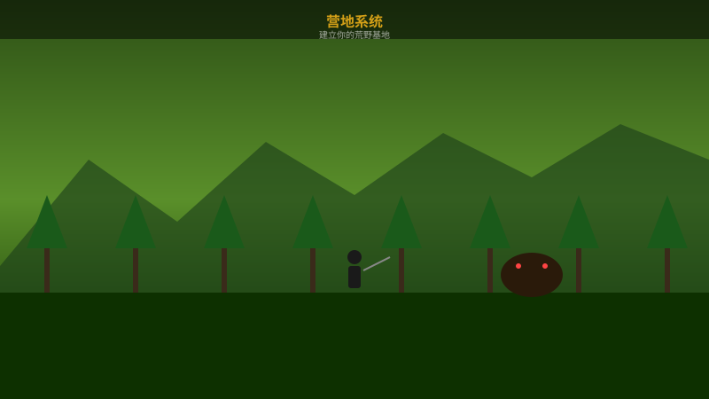
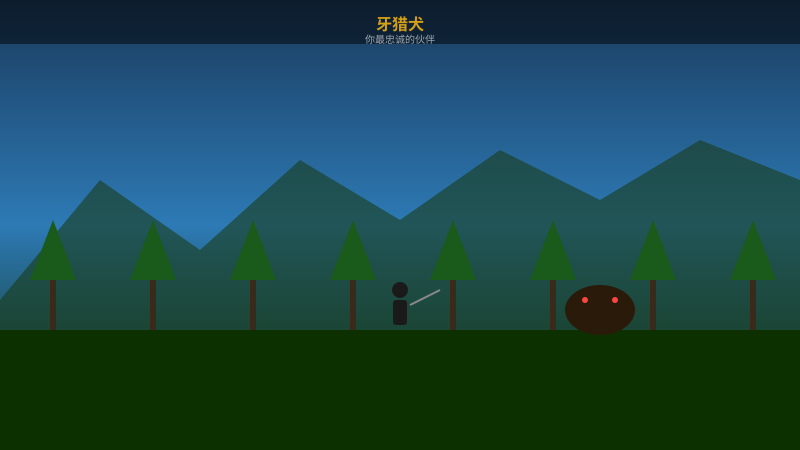
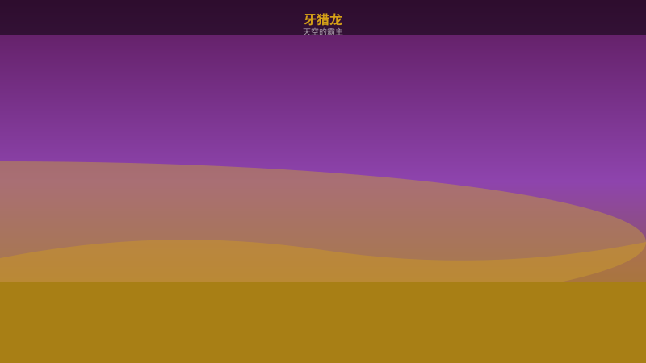
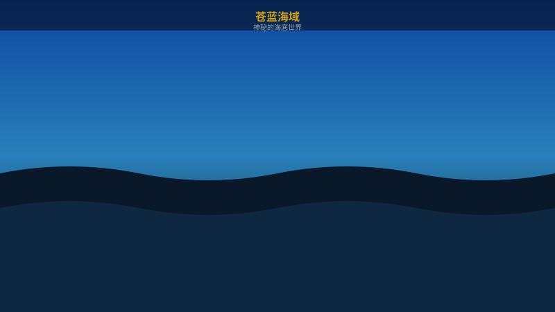
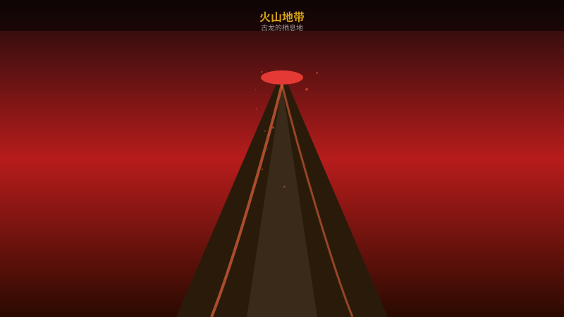

在荒野中建立前进基地，设置传送点、炼金台、补给箱。

忠诚的伙伴牙猎犬是你的狩猎助手，可以追踪怪物踪迹、抢夺掉落物、协助攻击。

中后期解锁强力坐骑牙猎龙，可以骑乘穿越复杂地形，在空中进行机动打击。
游戏初期每种武器都可以通过训练场练习。推荐新手使用大剑或斩击斧。
出任务前务必炼金！治疗药+防御珠是最实用的组合。
不要急着推进主线，多探索开放世界。营地任务会给你大量素材和金钱。
每个怪物都有行为模式。先观察再出手，注意怪物的愤怒状态。
利用属性相克可以大幅缩短狩猎时间。冰属性对火系怪物特攻。
根据任务需求即时更换装备。不同任务需要不同的防具技能。
荒野中有丰富的环境互动：引怪物撞墙、利用落石、在树上伏击。
地上有发光痕迹就是线索！调查后可以了解怪物种类和方向。
新手起始区域，植被茂密，地形平坦。
高温干旱地区，昼夜温差大。栖息着炎戈龙等火属性怪物。

广阔的海洋区域，可以潜水探索。

终期区域，岩浆遍布，危险重重。古龙栖息地。